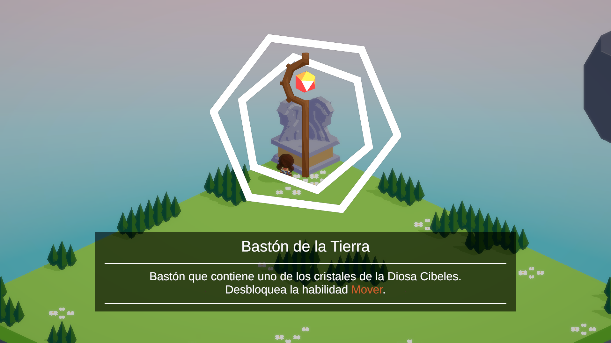
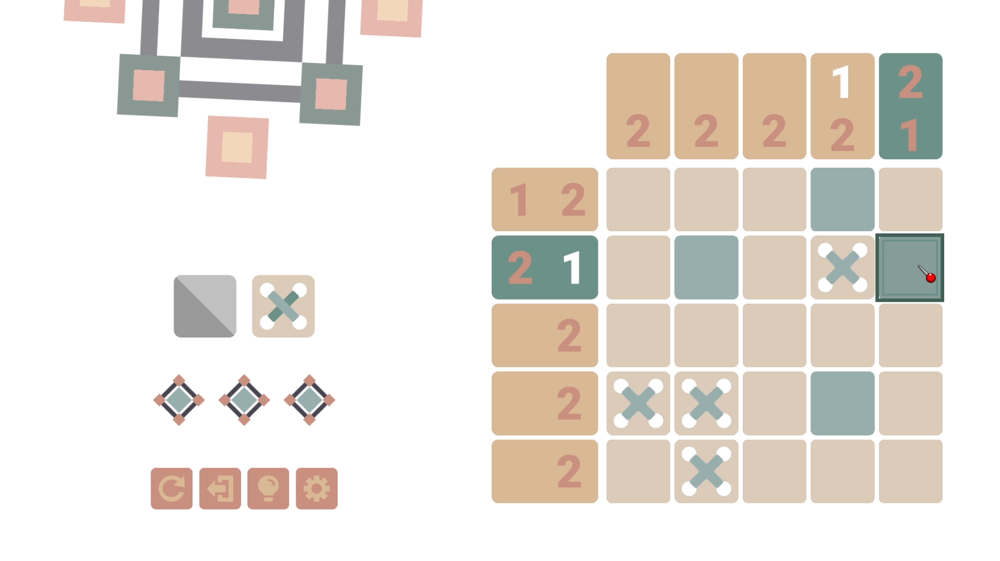
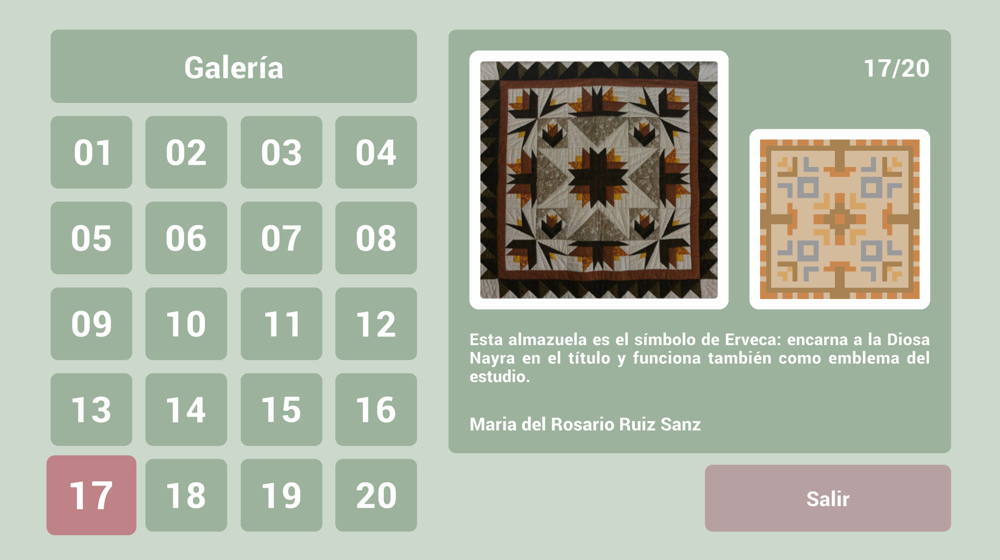

Galería
Capturas y avances

Goddess of the skiesBastón de Cibeles
El bastón de la Diosa de la tierra, Cibeles, que permitirá a Silvia mover bloques de roca.

Almazuela PicrossResolviendo nonogramas
El tablero de picross donde se desbloquean los retales de cada almazuela.

Almazuela PicrossAlmazuela ensamblada
Una de las 31 almazuelas reales, cedida por artesanas de Pradillo.
 Erveca
Erveca
Explorando Cameros
Pradillo, uno de los pueblos de la sierra recreados en Erveca.